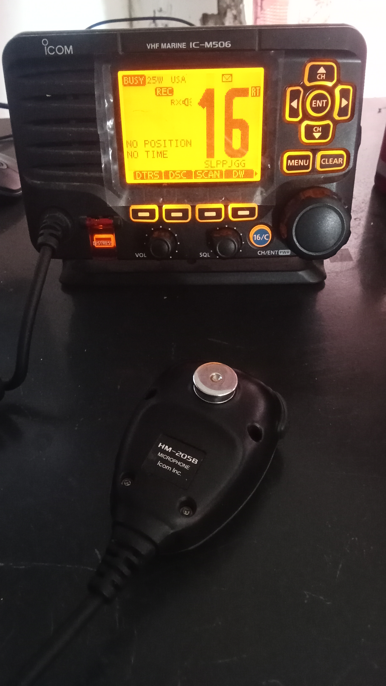
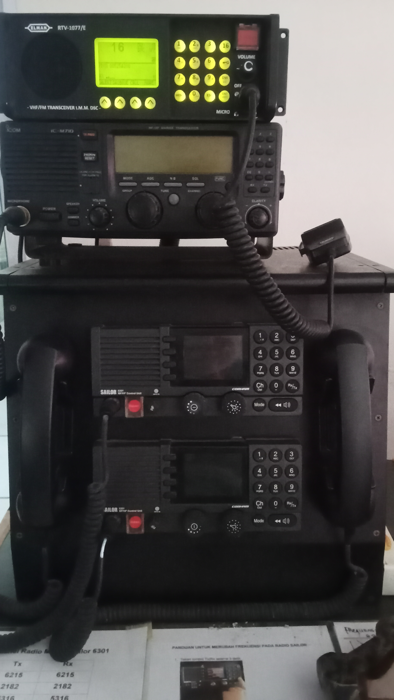
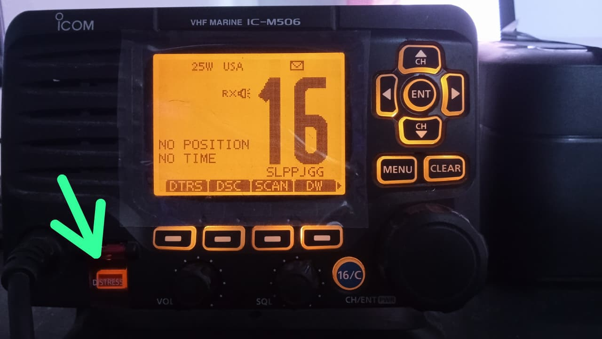

Radio Pantai
Perangkat komunikasi untuk membantu penyampaian informasi keselamatan antara kapal dan pihak di darat.
Informasi keselamatan pelayaran, komunikasi Radio Pantai, peralatan keselamatan, dan tindakan dalam keadaan darurat.
Pelajari Keselamatan Informasi DaruratMedia informasi dan edukasi keselamatan pelayaran
Website Sean AN dibuat sebagai media edukasi mengenai keselamatan pelayaran dan komunikasi maritim. Website ini menyajikan informasi Radio Pantai, VHF Channel 16, peralatan keselamatan, keadaan darurat, dan kecelakaan pelayaran.
Komunikasi sangat penting dalam keselamatan pelayaran.
VHF Channel 16 digunakan untuk komunikasi keselamatan dan panggilan marabahaya sesuai ketentuan radio maritim.
Kenali perangkat komunikasi yang mendukung keselamatan.

Perangkat komunikasi untuk membantu penyampaian informasi keselamatan antara kapal dan pihak di darat.

Radio VHF Marine digunakan untuk komunikasi suara dalam kegiatan pelayaran dan komunikasi keselamatan.

Tombol pada perangkat radio tertentu untuk kondisi marabahaya. Gunakan hanya sesuai prosedur resmi dan petunjuk perangkat.
Utamakan keselamatan dan ikuti prosedur yang berlaku.
Dalam keadaan darurat di kapal, komunikasi yang cepat dan tepat sangat penting untuk mendapatkan bantuan.
Digunakan untuk komunikasi keselamatan dan panggilan marabahaya melalui radio VHF sesuai ketentuan maritim.
Ikuti prosedur resmi dan petunjuk perangkat. Jangan menekan tombol marabahaya untuk percobaan tanpa izin dan prosedur yang sesuai.
Untuk keadaan yang membutuhkan pertolongan SAR, hubungi Basarnas melalui nomor 115.
Hubungi Basarnas 115Beberapa hal penting yang perlu diperhatikan.
Hindari kepanikan dan ikuti instruksi keselamatan awak kapal.
Gunakan peralatan yang tersedia sesuai kondisi dan prosedur.
Sampaikan informasi keadaan darurat melalui sarana komunikasi yang tersedia.
Ikuti arahan awak kapal, petugas keselamatan, atau pihak berwenang.
Dokumentasi perangkat komunikasi keselamatan.
Stasiun Radio Pantai Selatpanjang
Kepulauan Meranti, Riau
Untuk keadaan darurat, gunakan sarana komunikasi keselamatan yang tersedia dan hubungi pihak berwenang.